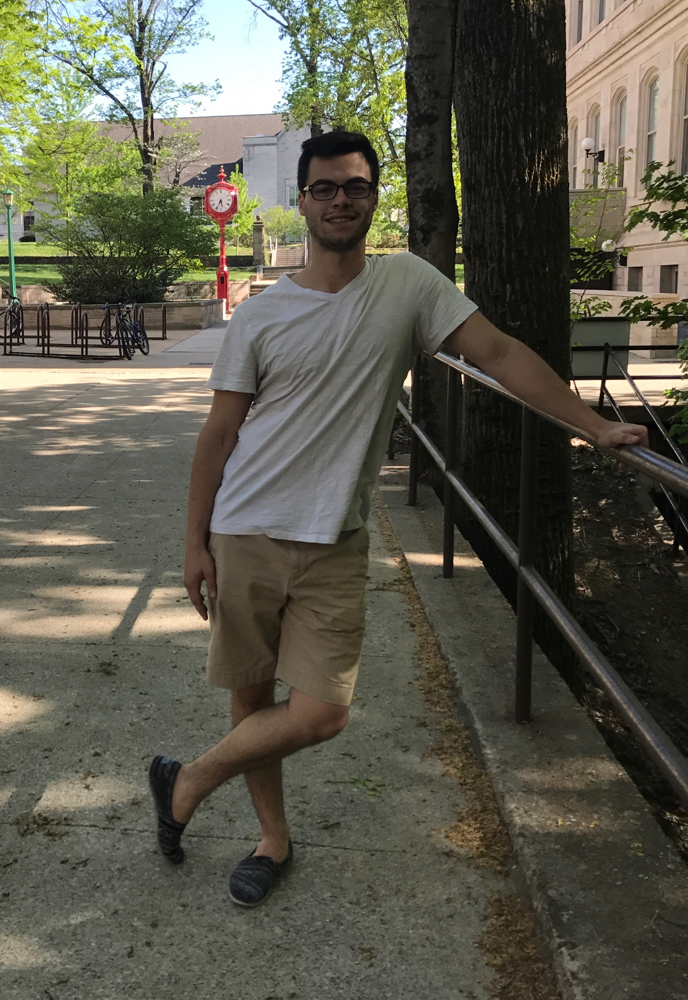

About Me
I’m David Gutsch, the host of this site! I am a freelance software engineer and a recent computer science graduate of Indiana University in the beautiful Bloomington Indiana. I entered into the development community via a python class three years ago, sparking the addiction of a lifetime! Since then I’ve worked my way through the various abstractions in computer science and more recently Engineering. I love peeling back the various layers of the computing onion because once you think you’ve reached the level of competence you were striving for, you are humbled to realize how much more you have/want to learn.
In my spare time when I’m not doing auxiliary development or learning about new technology/development methods, I do my best to lead a healthy lifestyle. As I used to be an Olympic weightlifter and baseball player, I usually choose to be healthy by lifting and running. I also enjoy getting involved in almost any sport! I am also a lingua-file (speaking: Castillian Spanish, Brazillian Portuguese) with a considerable amount of wanderlust. I have lived in Spain for a short period, as well as having traveled to Mexico. I’m also a gearhead. I love turning wrenches on my 1988 s10 Blazer, as well as my dad’s 1989 C4 corvette.
Though anything within the domain of: computing, Engineering, Physics, and mathematics spark my interest, I am most competent and fascinated with systems programming and embedded systems development for the Internet of Things (IoT). While at University I spent time doing academic research searching for models for trading cryptocurrencies. Additionally, I worked on a Dark-Sky project, engineering a light array using embedded technology to collect light samples in the Hoosier National Forest and transmit that data back to a web interface for the National Parks service. This system was created for the purpose of measuring light pollution in the forest in order for them to become a Dark-Sky preserve and drive more traffic to their park by way of an NSF grant. I haven't spent all of my time in academia, I have also been a software engineer for Kohl's department stores as an intern. This was a wonderful experience for me to get to understand how business is conducted at industry as well as how money is allocated to Projects and what processes drive decision making at industry. While at Kohl's I did a large scale refactoring of their software request system on the ServiceNow platform, as well as competing in a Shark Tank competition for interns where we developed an idea that would reduce cost or drive revenue, and proceeded to pitch the idea to Kohl's tech executives.
I have also spent the past two years teaching programming courses to people who are new to software development. I love demystifying the black box magic that the realm of computing can often feel like as well as giving back to the development community that is responsible for having taught me so much! This leads me to the purpose for having created this site!
About the Site
What is this site? And why am I here?
Like I said at the end of the previous section, I feel obliged to give back to the development community that has aided in shaping the developer/engineer that I am today. I, like many other developers and makers
of my generation are greatly indebted to bloggers, forum participants, tutorial creators, and Stack Overflow alike, for having guided us through the grueling process to enlightenment in the realm of computation.
My goal is to aid and inspire the next generation of developers to blossom into successful devs themselves!
This site is here for the purpose of disseminating interesting information in the way of Articles with fellow engineers, developers, makers, and nerds alike. Basically, anyone I think is interesting or cool who is willing to sit down with me and talk may end up featured in one of my articles. I’m open to suggestions, referrals, and other ideas as well. I will also be posting some of my personal projects that I work on for others to peruse, play with, and make their own. My hope is that these projects will range from beginner tutorial to advanced project more directed at well-rounded engineers.
My desire is to help new developers over some of the early hurdles that are pervasive in the computing space. Whether it be answering why recursion is important, when to use an array verses a list, how come my microcontroller doesn’t like me, or how long does imposter syndrome last; I promise to do my best to ease the growing pains that come with entering into this wonderful community. Finally, I’d love to spark ideas for creativity and innovation within the community by showing off some of my own projects, maybe some of you will find them as interesting as I do.
Feel free to reach out via the contact me page! I love participating in the community, so if you have questions, suggestions, or you disagree with guidance I’m providing. I love it all so please don’t hesitate to reach out.
Note: This site is in its infancy so some features I’d like to provide in the future include but are not limited to: bug tracking for tutorials and a comments section.